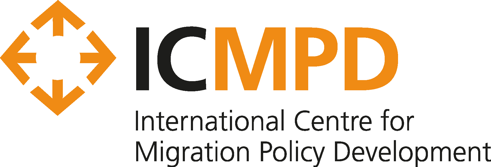
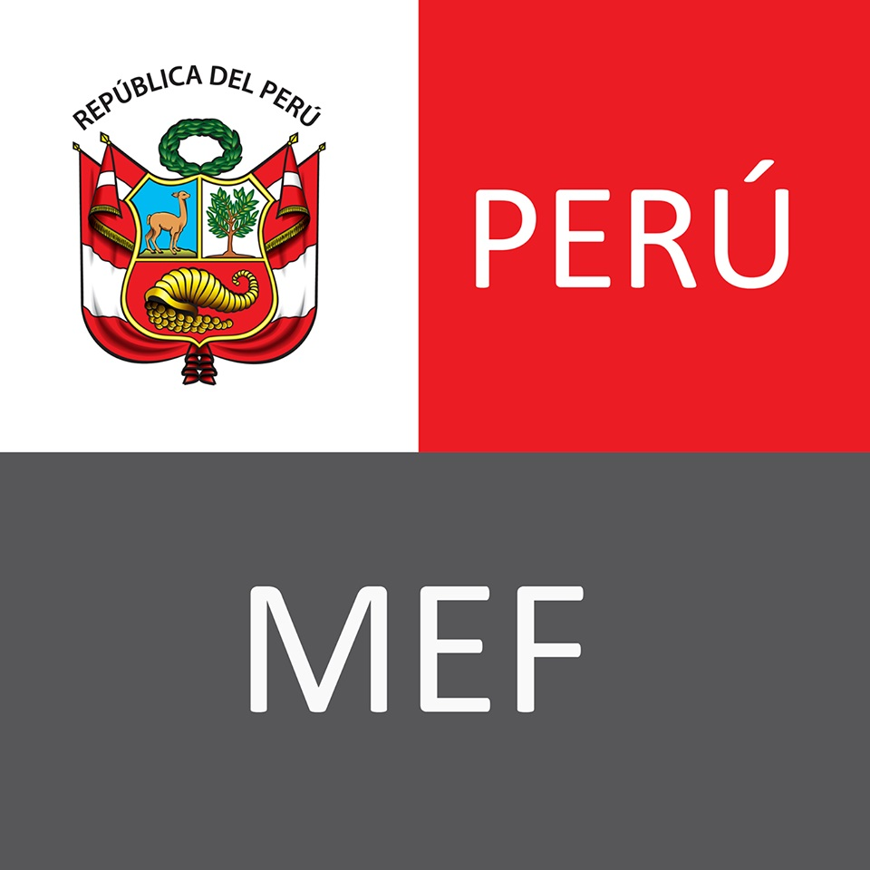
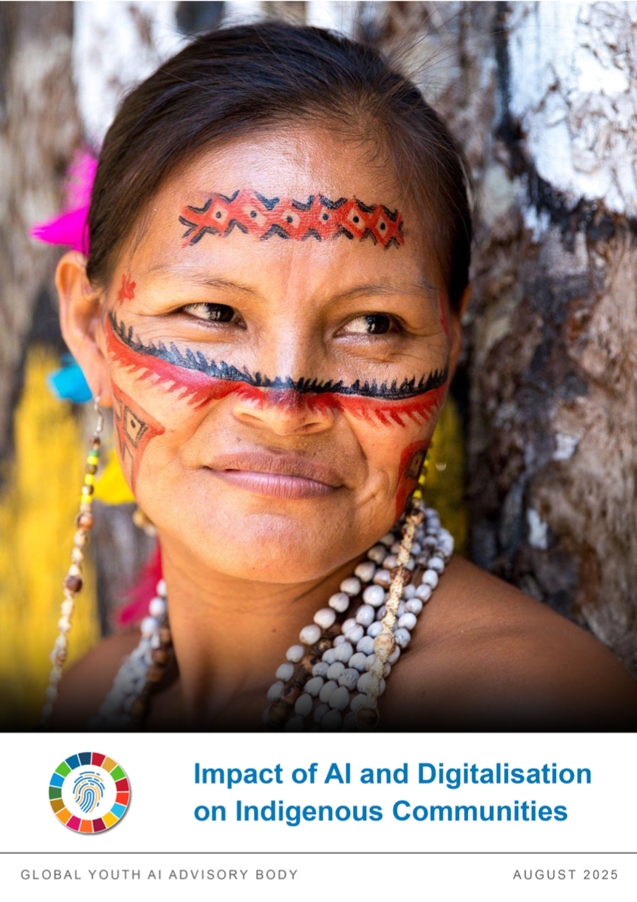
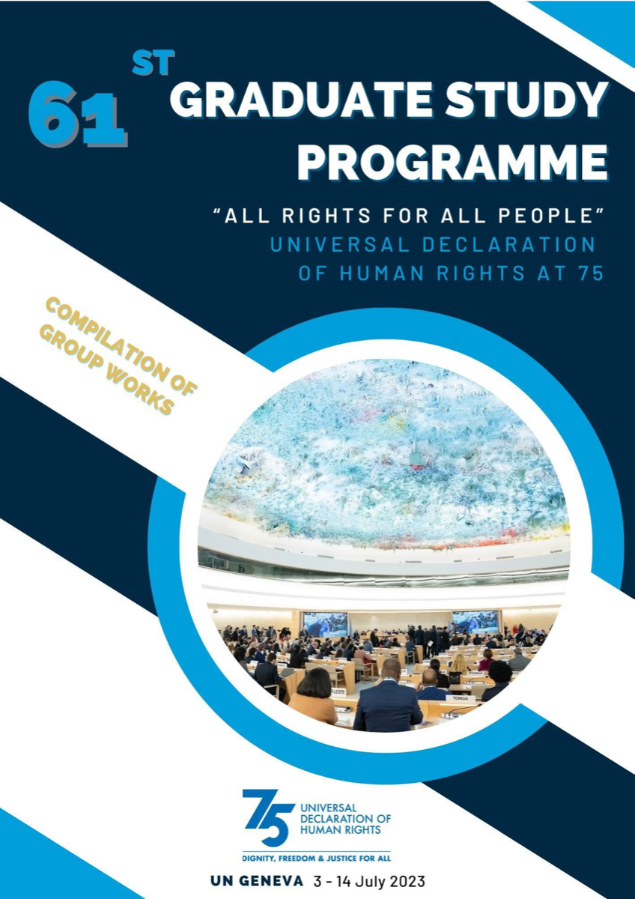
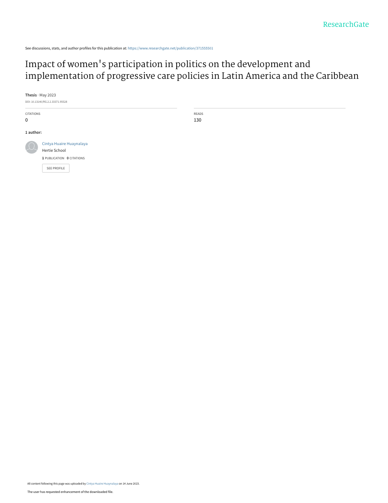
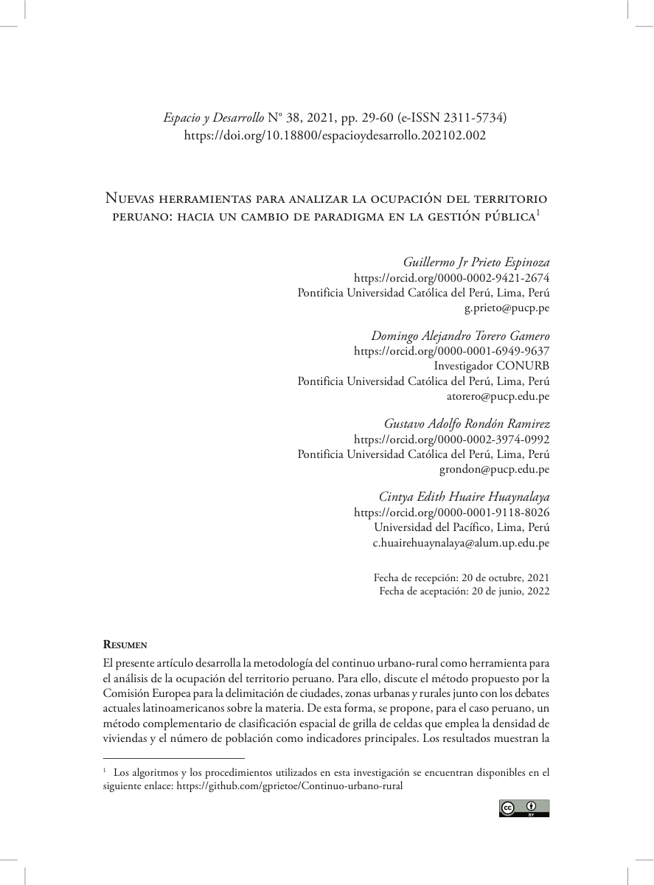
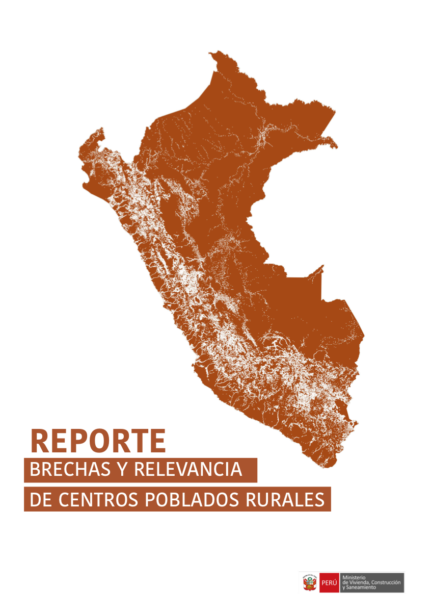

Responsable de l'Innovation Numérique et de l'Automatisation par l'IA | Systèmes de Données | Développement International
Professionnelle de l'innovation numérique avec plus de 7 ans d'expérience dans la conception et la mise en œuvre de solutions basées sur l'IA, de flux d'automatisation et de plateformes de données au sein de programmes de développement international. Contribue actuellement aux activités de modernisation à l'ICMPD sur les portefeuilles régionaux méditerranéens, y compris l'appui opérationnel aux bureaux de terrain en Jordanie, au Liban, en Libye et en Tunisie. Expérience avérée dans la conception et le déploiement de tableaux de bord, d'outils basés sur les LLM, de systèmes d'automatisation multi-agents et de plateformes de gestion des connaissances qui améliorent l'efficacité, la cohérence et la prise de décision fondée sur les données probantes dans des environnements complexes et multi-acteurs.

Contribue à la coordination opérationnelle et à la mise en œuvre des activités de modernisation numérique et basées sur l'IA au sein des portefeuilles régionaux méditerranéens (MCP Algérie, BMPM, MIDAM), en coordination avec le Responsable de la Modernisation.
A contribué à trois volets de recherche et de données menés en parallèle au sein de la Branche FPRW, couvrant l'analyse géospatiale, la recherche statistique et l'évaluation des risques dans les chaînes d'approvisionnement au Mexique, au Turkménistan et au Canada.
A soutenu l'équipe de Politique Sociale dans la production de données probantes, la systématisation des données et la communication des connaissances dans 18 pays d'Amérique latine et des Caraïbes, avec un accent sur les systèmes de soins et les politiques inclusives du handicap.
A contribué à un programme national d'analyse territoriale évaluant la répartition de la population, l'accès aux services et les besoins de développement rural dans les 94 922 centres peuplés du Pérou.

Mission d'assistance technique internationale contractée via HELVETAS Swiss Intercooperation pour appuyer le ST-AFSP au sein du Ministère de l'Économie et des Finances du Pérou.
A contribué à la conception et au déploiement national de Mi Mantenimiento, un programme numérique gouvernemental gérant le financement de la maintenance des infrastructures pour plus de 54 000 écoles publiques à travers le Pérou.
Programme de troisième cycle couvrant l'économétrie avancée, l'inférence causale, les essais contrôlés randomisés, l'évaluation d'impact et le financement du développement.
Spécialisation en conception de politiques fondée sur les données et les preuves. Mémoire : Impact de la participation politique des femmes sur les politiques progressistes de soins en Amérique latine et dans les Caraïbes.

Autrice principale du rapport examinant les risques et opportunités de l'IA pour les communautés autochtones à l'échelle mondiale, avec des recommandations politiques pour des cadres multilatéraux de gouvernance de l'IA. Global Youth AI Advisory Body (GYAAB).

Autrice contributrice sur les droits du travail, les transitions vers une économie verte et les cadres politiques pour les pays d'Amérique latine et des Caraïbes. Rapport du 61e Programme d'Études pour Diplômés de l'ONU, ONU Genève.

Mémoire de master examinant la corrélation entre la représentation politique des femmes et le développement de politiques progressistes de soins en Amérique latine et dans les Caraïbes.

Quatrième autrice. Analyse géospatiale et quantitative des schémas d'occupation territoriale dans le Pérou rural. Espacio y Desarrollo, n° 38, p. 29–60, PUCP. Évalué par les pairs.

Rapport gouvernemental analysant les écarts et la pertinence des centres peuplés ruraux au Pérou, couvrant 94 922 centres peuplés, pour éclairer la politique nationale du logement et du développement.